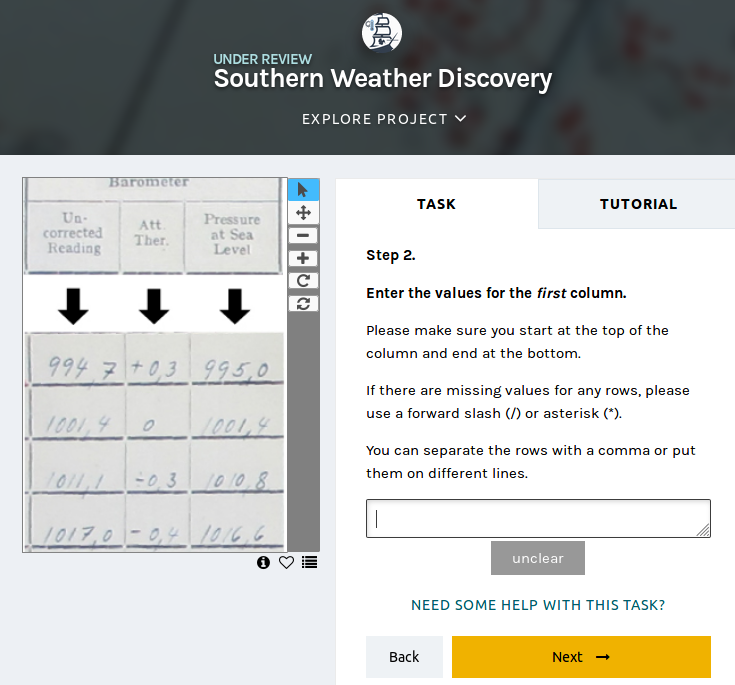
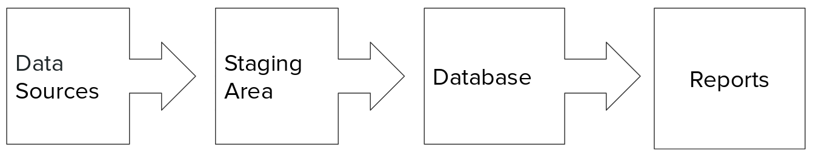

Data's Role in the Transformative Research Library
Kristina M. Spurgin
2018-10-16
Created: 2018-10-14 Sun 19:19
Introduction
- Who am I?
- Notes and disclaimers
Context: The transformative research library
- Libraries as organizations are transforming
- Working in a transformative library transforms you
- A transformative library transforms the world
Data
- Research data
- Patron/user data
- Collections as data
- Library data
Orthogonal theme: Data Literacy
Information that directly impact people’s lives is increasingly accessible but civil society is falling behind in making effective use of it. --School of Data
Universities have a responsibility to ensure that the students of today learn to engage with and use data to understand the world and inform decision-making.
Libraries can be key partners in making this happen.
Research Data

Figure 1: USGS Science Data Lifecycle Model. Boxes indicate the main Model elements, and the shaded arrows below represent cross-cutting elements.1
Data management plans (DMPs)
- Required by an increasing number of funders (src)
- Calls for decisions about:
- metadata
- organizing data
- selecting file formats
- supporting sharing and reuse of data
- data archiving and preservation
- rights, licensing, open access considerations
These are not new concepts or skills for libraries!
Library services and tools related to DMP
Data discovery
Our users need data to:
- conduct research
- complete coursework
- meet personal information needs
Libraries are exploring ways to help users to find the data they need
Aggregation of metadata from data repositories in discovery tools
- Triangle Research Libraries Network (TRLN) shared catalog
- One shared index and union catalog of Duke, NCCU, NCSU, and UNC holdings
- Individual institutional catalogs for Duke, UNC, and NCSU
- External feeds of metadata from two data repositories mapped into catalog
- UNC Odum Institute Archive Dataverse
- ~2895 dataset records
- unrestricted sets only
- appear for all institutions
- Inter-university Consortium for Political and Social Research (ICPSR)
- ~10,696 study records (some have multiple data files associated)
- appear for Duke, NCSU, and UNC only
- UNC Odum Institute Archive Dataverse
UNC Odum Institute Archive Dataverse record

Figure 2: UNC Odum Institute Archive Dataverse record appearing in the TRLN shared catalog (link)
ICPSR record in TRLN Shared Catalog

Figure 3: ICPSR record appearing in the TRLN shared catalog (link)
Data catalogs
A data catalog is an aggregation of metadata and corresponding links to data. The catalogs are used to bring together related data that may be hosted in different repositories to make it easier for researchers to find data. Current catalogs range from aggregating research data from an institution to from an entire field. --National Network of Libraries of Medicine Data Thesaurus
- Columbia University Libraries Digital Social Science Center Data Catalog
- Data Catalog Collaboration Project (DCCP) (NYU, UPitt, Duke, UMB, UVA, UNC, Wayne State)
Responsibilities in larger data discovery ecosystem
If we are building institutional or consortial data repositories or catalogs:
- Support harvesting and aggregation of your metadata
- OAI-PMH, ResourceSync, or an API that supports metadata harvesting
- Ensure metadata is interoperable
- Register your collections with appropriate external resources
Managing, processing and analyzing data
Many libraries now provide training and consultation on a wide range of techniques and tools for working with data:
- Data cleaning and remediation
- R, Python, or other languages for manipulating and analyzing data
- Data visualization
- GIS data and mapping
- Corpus linguistics tools and methods (AntConc, Voyant, etc)
- Creating transparent, reproducible research using Jupyter Notebooks or other tools
- Distributing/sharing and version controlling data (Dat Project)
- Principles of frictionless data (see also csv,conf)
Publishing (and preserving)
Collections as data
"Collections as data development aims to encourage computational use of digitized and born digital collections. By conceiving of, packaging, and making collections available as data, cultural heritage institutions work to expand the set of possible opportunities for engaging with collections." https://collectionsasdata.github.io/statement/
Text and data mining
topic modeling, network modeling, machine learning, and other natural language processing tests
Scraping of digital collections and requests for delivery of digital collections as textual corpora for text mining/analysis - https://collectionsasdata.github.io/facet1/ MIT
leverage and re-negotiate existing resource agreements – researchers want to be able to do things with vendor-provided collections too
"we believe that libraries should move beyond the creation of digital images of original sources. Digital materials should allow scholars to do interesting and amazing things with our unique collections beyond what is possible with their physical incarnation rather than trying to replicate the experience of the original."--https://collectionsasdata.github.io/facet11/
Catalogs as data sets
Museums
- Museum of Modern Art (MoMA) - Artists (15,651 records) and Artworks (135,423 records) - csv and json - updated monthly
- Carnegie Museum of Art Collection Data – https://collectionsasdata.github.io/facet2/
Libraries
- University of Pennsylvania Libraries – Open bibliographic records, OPENN (complete sets of high-resolution archival images of manuscripts and cultural heritage material from Penn Libraries and other contributing institutions, along with machine-readable descriptive and technical metadata.)
- Harvard Library bibliographic dataset - This dataset contains over 12 million bibliographic records for materials held by the Harvard Library, including books, journals, electronic resources, manuscripts, archival materials, scores, audio, video and other materials.
Turning legacy analog data sets into computationally actionable data sets
" Description: In 1951, the Hopkins Marine Station of Stanford University became a partner in the California Cooperative Oceanic Fisheries Investigations (CalCOFI) program in order to collect oceanographic data in and near Monterey Bay. The aim of the program was to conduct joint fisheries-oceanographic cruises that would help researchers understand what contributed to observed fluctuations in the California sardine fishery. Hopkins condutced weekly sampling (more or less) continuously from March 1951 through June 1974. The raw and aggregated data for most of these cruises currently reside in analog form (handwritten data logs, annual reports, etc.) in the library at the Hopkins Marine Station. The dataset includes variables such as temperature, salinity, oxygen, phosphate, silicate, phytoplankton and zooplankton community structure and abundance, meteorological conditions, fish and marine mammal counts, and more. The collection includes forty-four 3-ring or loose-bound notebooks, twenty-two small, bound notebooks, minutes from annual meetings, annual data reports, and other ephemera. The Hopkins CalCOFI collection is large, completely analog, and very heterogeneous. We are in the early phases of planning a curation strategy, but our general objectives for the dataset are to digitize it, add metadata, convert sampling data to actionable formats, and make it all public. "

Figure 4: Interface for transcribing old weather data from ocean voyages via the Southern Weather Discovery project on Zooniverse
- American Philosophical Society Library data - historic prison data – a post office book kept by Benjamin Franklin during his tenure as Postmaster of Philadelphia – a record of indentured individuals arriving in Philadelphia during the years of 1771-1773.
Data about the features of collections as data
HathiTrust Research Center Extracted Features Dataset "HathiTrust Digital Library is a massive digital collection, comprising more than 15.8 million volumes, and growing. HathiTrust aims to leverage the scope and scale of the digital library to the benefit of research and scholarship. The collection includes considerable material under copyright or subject to licensing agreements, which prohibits HathiTrust from releasing much of it—either in the form of plain text files or scanned pages—as freely-available data. The HathiTrust Research Center therefore develops tools and services that open the collection to data-driven research while remaining within the bounds of copyright and licensing restrictions, allowing only non-consumptive research.
One way the Research Center approaches this goal is through tools and technical infrastructure that mediate access to the data, including web algorithms researchers can run on HathiTrust data, the HathiTrust+Bookworm visualization tool, and the HTRC Data Capsule secure computing environment. Results from a user-needs assessment for text analysis conducted by the Research Center, as well as anecdotal evidence from researchers affiliated with HTRC, evinced the value of flexible, open data for text analysis research. To this end, the Research Center released the HTRC Extracted Features Dataset in 2015, which includes metadata and data derived from the HathiTrust corpus. The derived “features” in the dataset include page count, line count, empty line count, counts of characters that begin and end lines, and part-of-speech tagged word counts. The first release (v.0.2) included 4.8 million public domain volumes from the collection, and second release (v.1.0) opened 13.7 million volumes from the collection, representing a snapshot of the entire HathiTrust Digital Library circa 2016.
…
Much text analysis research begins with the process of generating so-called features from the original text, which are then counted and calculated to draw conclusions about the data. HTRC Extracted Features aids the researcher by providing the data already in feature format. Furthermore, this shift in format from full text to features distills the contents of the volumes into facts and metadata, discarding the original expression of the full text. The Extracted Features dataset therefore strikes a balance of meeting the needs of researchers in a non-consumptive manner.
…
The resulting dataset includes: *For every volume: metadata, including bibliographic metadata, word counts, and page counts. *For every page in a volume: part-of-speech tagged tokens (words) and their counts. Metadata, including information about the page (number of lines, number of empty lines, counts of characters beginning and ending lines), and the language, which has been computationally determined.
HTRC Extracted Features are available in JSON format, where each file represents a volume. Within the JSON files, data is organized by page in the volume. JSON is a hierarchical file format popular for exchanging data, and it lends itself well to representing book data.
HTRC Extracted Features are available using rsync, which HathiTrust tends to use to share data and is considered an efficient file transfer protocol. Volumes download in pairtree format, a highly-nested directory structure.
The data can be retrieved with a structured URL that includes the standard HathiTrust volume identification number. The rsync URL format is: data.analytics.hathitrust.org::features/. More information about generating the rysnc URL can be found here: https://wiki.htrc.illinois.edu/x/oYDJAQ.
…
The HTRC Extracted Features dataset is useful for both research and teaching. As discussed in section 2 above, the feature format provides the data in a derived manner that aids the research process without over-mediating access to the data. As structured and pre-processed data, it does not meet the needs of all users, for example those whose work requires access to bigrams or greater, though it is useful for research that follows the bag-of-words model or that starts from token counts. Demonstrated uses have shown the data’s value in large-scale computational text analysis, such as text classification using machine learning techniques, and in-classroom for teaching data science and digital humanities. Exemplary uses are outlined below.
Text classification with HTRC Extracted Features
Ted Underwood at the University of Illinois has drawn on HTRC Extracted Features in his research on literary genres. His work in machine learning uses the features data, including words and word counts, characters, and computationally-inferred, page-level metadata, to make inferences about genre in HathiTrust. Dr. Underwood classified volumes in the broad categories of fiction, poetry, drama, nonfiction prose, and paratext. His work classified over 800,000 volumes at the page-level, and resulted in a derived dataset containing word counts by genre and by year for volumes from 1700-1922.
More information about this research is available on FigShare: http://dx.doi.org/10.6084/m9.figshare.1281251
Pedagogical application of HTRC Extracted Features
Chris Hench and Cody Hennesy at the University of California, Berkeley have developed a module for the Berkeley Data Science Education Program that makes use of HTRC Extracted Features. In the first iteration of the module, students documented the use of Extracted Features in data visualization, mapping, and classification in Jupyter Notebooks. Their Notebooks will be re-used in the classroom over the next year. Chris will introduce the curriculum to students in his course, “Rediscovering Texts as Data.” In that multidisciplinary, digital humanities class, students will build on the existing Jupyter Notebooks as they develop coding skills. Chris also imagines using the Notebooks in workshops with non-programmers, where they will provide a legible introduction to text analysis by revealing how Python code is used to interact with the data without requiring attendees to program.
The Jupyter Notebooks are shared on GitHub: https://github.com/ds-modules/Library-HTRC." – https://collectionsasdata.github.io/facet10/
Organisciak, P., Capitanu, B., Underwood, T. & Downie, S.J. (2017). “Access to billions of pages for large-scale text analysis.” iConference 2017. Wuhan, China. http://hdl.handle.net/2142/96256
Challenges
SKILLS
text mining creating and preparing corpora database applications data manipulation software or programming languages large-scale file management cloud/distributed computing
SCALE
FORMAT
"PDFs of legacy data are nearly worthless to a marine scientist who seeks to answer research questions." – Hydrobiological survey data https://collectionsasdata.github.io/facet3/
QUALITY
"One key insight we gained was the need to perform a thorough appraisal of the collection from a data completeness, uniformity, and consistency perspective: when discovery and access are confined to siloed legacy applications, these quality dimensions may be difficult to observe." https://collectionsasdata.github.io/facet1/
Limits of OCR, especially for older printed materials and handwritten materials
Crowdsourcing – opportunities to engage with professors/students to allow the enrichment/collection of materials to inform/enrich pedagogy and learning experiences
RIGHTS
Do you only release the bib records originally created by your institution? (UMich) Or include the whole catalog (including vendor and OCLC records(released under Open Data Commons ODC-BY)) (Harvard, Columbia Univ Libraries) Or split the two into separate files? (UPenn)
Harvard Library Policy On Open Metadata
The Harvard Library provides open access to library metadata, subject to legal and privacy factors. In particular, the Library makes available its own catalog metadata under appropriate broad use licenses. The Library Board is responsible for interpreting this policy, resolving disputes concerning its interpretation and application, and modifying it as necessary.
This policy applies to all metadata that the library holds. For instance, the metadata from the DASH repository is also distributed under an open license.
Some metadata may have been placed under contractual obligations preventing distribution prior to the establishment of this policy. In such cases, of course, the library cannot legally, and will not, distribute the metadata beyond what such agreements allow.
Metadata that involves the usage of library materials by individual patrons will not be distributed without sufficient anonymization or aggregation to provide reasonable protection against the reconstruction of individual patron usage.
Because each metadata set may have individual legal and privacy characteristics, appropriate licenses are designed on an individual dataset basis. However, the goal is to make these licenses as broad as possible.
---=
Ethics
Unexpected results when data can be mined
"Collections as data stewards aim to lower barriers to use. A range of accessible instructional materials and documentation should be developed to support collections as data use. These materials should be scoped to varying levels of technical expertise. Materials should also be scoped to a range of disciplinary, professional, creative, artistic, and educational contexts. Furthermore the community should be motivated and encouraged to build and share tools and infrastructure to facilitate use of collections as data." https://collectionsasdata.github.io/statement/
Understanding algorithms are not neutral
What is absent from the collections?
Patron data
We protect each library user's right to privacy and confidentiality with respect to information sought or received and resources consulted, borrowed, acquired or transmitted. –ALA Code of Ethics1
“National Web Privacy Forum - MSU Library | Montana State University,” September 12, 2018. https://www.lib.montana.edu/privacy-forum/.
How we use patron data
Tension between desire to make collections and knowledge freely available for all without tracking users vs. need to understand use of collections and tell stories about our value https://collectionsasdata.github.io/facet1/ pt 5
"Expect any data you collect and store to be used for purposes you didn't intend—and maybe wouldn't approve of." –Salo pres
Basics:
- serve sites in https
- do not allow 3rd party ad trackers like doubleclick or ad nexus on your library sites to track users!
---
Wrangling Library Patron Data - Becky Yoose, LITA Webinar 2018-04-11
---
- What data are we collecting?
- Why are we collecting it? ("When you look at what data you are collecting, there should be a solid business need attached to that data being collected. Is there a measurable outcome that is being assessed for an application or service? Are there operational needs as to why you need this particular piece of information? Can those needs be met by collecting lower risk PII data from patrons, essentially finding lower risk proxies for high risk data?" –Yoose, Wrangling Library Patron Data (Slide 14)
- Storage and retention policies for patron data
- Where is this data stored?
- Who has access to this data? Audit regularly.
Open Data Initiative Universities adopting learning analytics programs "Libraries are being asked to supply electronic resource usage statistics, physical circulation information, reference statistics, and even information about student card use to access the physical library or a service that the library provides." –Yoose, Wrangling… Slide 37
- De-identifcation methods do not provide adequate privacy protection for outliers in a service population, or a small overall service population or subset. Nor does it protect against identifiable patterns in the data (e.g. AOL search logs used to reconstruct specific identities belonging to distinct persons) – or what identifiable data may emerge if your data set is matched up with another data set(eg NYC Taxicab data set + images from Google image search + other external data = identifying individual taxi passengers) (Yoose, Wrangling…, slide 27, 38)
"Libraries have a complicated relationship with data. We believe that patrons must have privacy while using library services and resources, but the systems we use collect patron data that is highly sought after for analytics, marketing, and assessment needs for internal and external audiences. Libraries are then left to figure out how to meet data analytical and assessment needs of the organization without betraying patron trust in the library to protect their privacy. This talk, based on a case study at a large library system, will discuss many of the issues in balancing the need for analytical data while upholding patron privacy and library ethics, including: - De-identification of patron data, including strategies and the risks involved with several de-identification methods - Technical processes and structures for building and maintaining a data warehouse - Data and privacy policies and governance at the organizational level - Auditing what data is being collected by the library, from system logs to paper forms The talk will address how these issues impact libraries with both limited and extensive resources in their efforts to balance data analytical needs and patron privacy." Abstract of Becky Yoose, Data Analytics and Patron Privacy in Libraries: A Balancing Act, 2018-03-01 (Code4Lib 2018 presentation) https://osf.io/xb4mf/
"
- De-identifying Patron Data to Balance Privacy and Insight Becky Yoose Stephen Halsey The Seattle Public Library ?? PLA 4/7/2016
- Presentation Outline • Overview of Data Management Principles, Policies, and Practices • Balancing Library Strategic Needs with Patron Privacy • SPL Methods of Data De-identification • Summary
- Principles, Policies, and Practices
- ALA Data Management Guidelines • Collection of personally identifiable information • only when necessary to fulfill the mission of the library • Should not share personally identifiable user information with third parties, unless • the library has obtained user permission • has entered into a legal agreement with the vendor • Make records available [to law enforcement agencies and officers] only in response to properly executed orders. “An interpretation of the Library Bill of Rights.” http://www.ala.org/advocacy/intfreedom/librarybill/interpretations/privacy
- State Law: Revised Code of WA • RCW 42.56.310: Library Records • Any library record, the primary purpose of which is to maintain control of library materials, or to gain access to information, that discloses or could be used to disclose the identity of a library user is exempt from disclosure under this chapter. • RCW 19.255.010: Disclosure, notice — Definitions — Rights, remedies. • First & last name combined with SSN, DL #, credit/debit card number, authentication credentials, “account number”
- SPL Confidentiality of Patron Data • It is the policy of The Seattle Public Library to protect the confidentiality of borrower records as part of its commitment to intellectual freedom. • The Library will keep patron records confidential and will not disclose this information except • as necessary for the proper operation of the Library • upon consent of the user • pursuant to subpoena or court order • as otherwise required by law. The Seattle Public Library. “Confidentiality of Borrower Records.” http://www.spl.org/about-the-library/library-use-policies/confidentiality-of-borrower-records
- SPL Data Management Practices • All records connecting a patron to an item that has been held or borrowed, or to an information resource that has been accessed, are deleted upon the successful fulfillment of the transaction. • Circulation records • Public computer reservations • Workstation use data (log files, caches, histories) • Network logs
- NIST: Two-part Definition of PII 1. Any information that can be used to distinguish or trace an individual‘s identity, such as name, social security number, date and place of birth, mother‘s maiden name, or biometric records 2. Any other information that is linked or linkable to an individual, such as medical, educational, financial, and employment information a) Libraries extend the second point by including borrowing and information seeking activity National Institute of Standards and Technology via the Government Accounting Office expression of an amalgam of the definitions of PII from Office of Management and Budget Memorandums 07-16 and 06-19. May 2008, http://www.gao.gov/new.items/d08536.pdf
- Two-part Definition of PII PII-1: Individual PII-2: Intellectual Pursuits
- Balancing Library Strategic Planning Needs with Patron Privacy
- 3/16/2015 penguincakes/Flickr
- “Unanswerable” Questions • Longitudinal questions (e.g. trended analysis) • Long-term (multi-year) rather than snapshot • Trends, correlations, changes in behavior – not necessarily individual activity • Questions only about the type of behavioral use of Library programs and services: •“Do teen patrons remain active in their 20s?” •“Do people use their neighborhood branch or use the branch where relevant materials are?” (e.g. Chinese language collection)
- Privacy Requirements • Passionate commitment to intellectual freedom • Recognition that some patrons have no alternatives • Intellectual content of transactions should always be purged • Avoid keeping records that show person’s whereabouts
- Threats to patron privacy • Law enforcement • Seeking intellectual pursuit data • Seeking patron whereabouts • Hackers • Library and ILS data • Data leak • Reconstruction of identity via data • Embarrassment/loss of trust • Notification costs
- AOL data release (2006) There was no personally identifiable data provided by AOL with those records, but search queries themselves can sometimes include such information. This was a screw up TechCrunch. “AOL: ‘This was a screw up’.” August 2006. http://techcrunch.com/2006/08/07/aol-this- was-a-screw-up/
- AOL Example: User 4417749 numb fingers 60 single men dog that urinates on everything robert arnold marion arnold john arnold georgia homes sold in shadow lake subdivision gwinnet county georgia landscapers in Lilburn, GaThelma Arnold
- Target(ed) Marketing The Incredible Story Of How Target Exposed A Teen Girl's Pregnancy http://www.businessinsider.com/the-incredible-story-of-how-target-exposed-a-teen-girls-pregnancy-2012-2
- Data for Good In a 2012 Pew Research survey, 64% of respondents said they would be interested in personalized online accounts. 29% would be very likely to use the services. Last 30 days for SPL BiblioCommons opt- in for borrowing history is 34%. “7 Surprises About Libraries in Our Surveys”, Pew Research, 2012 http://www.pewresearch.org/fact-tank/2014/06/30/7-surprises-about-libraries-in-our-surveys/
- Two-part Definition of PII PII-1: People PII-2: Intellectual Pursuits
- Data De-identification • Designed to protect individual privacy while preserving some of the dataset’s utility for other purposes. • Make it hard or impossible to learn if an individual’s data is in a data set, or determine any attributes about an individual known to be in the data set. • HIPAA: Data that does not identify an individual and with respect to which there is no reasonable basis to believe that the information can be used to identify an individual Garfinkel, Simson L. “De-Identification of Personally Identifiable Information.” April 2015. NIST. http://csrc.nist.gov/publications/drafts/nistir-8053/nistir_8053_draft.pdf Scott Nicholson and Catherine Arnott Smith, "Using Lessons From Health Care to Protect The Privacy of Library Users: Guidelines For The De‐identification of Library Data Based on HIPAA," Proceedings of the American Society for Information Science and Technology 42, no. 1 (2005): 1198–1206.
- SPL Methods of Data De-identification Millennial Project summary
- Millennial Engagement
- Persona - fictional person created from de-identified data
- The better than nothing method of tracking
- SPL Methods of Data De-identification Data Warehouse Methods
- Age vs. DOB • DOB: 3/15/1975 • Age 41 • DOB: 3/15/1975? • 3/16/1975? • 3/17/1975? • 3/18/1975? • 3/19/1975? • 3/20/1975? • 3/21/1975? • 3/22/1975?
- Call numbers • Call number: 914.30487 F683 • Format: DVD • Collection: Beginning ESL • Truncated call number: 91*, FIC
- Timestamps vs. dates • Timestamp Mon, 11 Apr 2016 11:02:43 +0000 • Date 4/11/2015, 00:44
- Extract-Transform-Load Data PII? Barcode Yes Name Yes Address Yes Email Address Yes Phone Number Yes Date of Birth Yes Age No Gender No Zip Code No Registration Year No Data III? Barcode Yes Title Yes Author Yes Call Number Yes – truncate it Item Type No Branch No Date No Age Gender Zip Reg Year Item Type Dewey 100 Branch Date 45 Male 98117 2004 CD 700 CEN 4/1/15 45 Male 98117 2004 Book FIC BAL 4/3/15 Patrons Circulation
- https://www.flickr.com/photos/accidentalhedonist/5707034712/
- Belt & suspenders • To identify a specific patron’s transaction, you’d need to • Breach ILS • Recreate hash algorithm • Breach data warehouse • Look up patron • Even then • No intellectual content or whereabouts • Only the fact of types of transactions • Strict, clear policies for staff
- Data Warehouse Example
- Express Computer Policy Are patrons abusing 15-minute “Express” workstations? Old policy • 90 minutes per day for “Internet” workstation • 15 minutes per day for “Express” workstation • Total of 90 minutes per day for any workstation • Allowed for “serial” use of Express workstations (6x per day) • Staff noticed (anecdotally) that “a lot” of patrons were chaining Express sessions together
- Sample Data – Workstation Use COMPUTER LOC DATE MINS BTYPE BSTAT HOMEZIP AGE PATRONdeID REGYR BALLIB08 BAL 10/1/2014 5 br srad 98119 23 KEwHPoJpXY7K757HLmVQXHEyaEg= 2014 CENLIB5270 CEN 10/1/2014 90 br srsen 98121 69 JeTrHceC+nwaWc/DQZ8VBfgKbL4= 1992 BALLIB08 BAL 10/1/2014 15 br srad 98107 53 hzvXFK24blsKH9LW7Pkc5kHecto= 2014 IDCLIB12 IDC 10/1/2014 48 br srsen 98104 63 aS4MypnjX+KV699OVM525fWB//k= 2014 UNILIB12 UNI 10/1/2014 15 br srad 98105 36 kKdtdIrFDhQTuQwDQcqzGXkQYoc= 2010 BALLIB15 BAL 10/1/2014 25 br srsen 98117 71 RJ0bkOnwFlmwTrFrAf/fsYJUfMo= 1992 CENLIB3009 CEN 10/1/2014 1 br srad 98122 50 tK+QVA0PJvQk57147tU8VK08aZ8= 1996 UNILIB12 UNI 10/1/2014 15 br srsen 98115 81 JytJE+kXHCEMpsK8lUfd4MdU/U8= 1992 CENLIB5330 CEN 10/1/2014 90 br srad 98104 59 Q2se1NTE3m54zolcnS+SE19ZyTU= 2002 BALLIB15 BAL 10/1/2014 5 br srad 98104 51 gS08RjQIzUGSZSuStA2Tz7MfvzE= 2013 CENLIB5401 CEN 10/1/2014 7 br srad 98133 48 mTXkmtPG7e1Y0mMOmhxwb9RaB/c= 2011 CENLIB5330 CEN 10/1/2014 32 br srad 98104 44 Bi1XhBLDx4Jl9yA1Y2w/tSbZrXM= 2012 CENLIB3011 CEN 10/1/2014 58 br srad 98133 48 mTXkmtPG7e1Y0mMOmhxwb9RaB/c= 2011 CENLIB5270 CEN 10/1/2014 90 br kcad 98035 49 T3D+yZiijOFqEuKa39/D4iURCEo= 2009 QNALIB05 QNA 10/1/2014 74 br srsen 98109 71 y3FSFjyUfO4mc3lzUSUWMGeYLVA= 1992 CENLIB3009 CEN 10/1/2014 4 br srad 98109 29 szB++tBCmztvhjqEx3i3/S/g2Io= 2005
- Sample Data – 2015-08-01 Patron DeID Number of Sessions Number of Minutes 34c4e0c201ac7f14f8eef3c14fb877ca 6 90 38b82f34e018ef6accc258e4d539cfd4 6 90 5f9511476cdda7020e6356b4a8d33419 6 90 8025078883a24a72a7f0f84077e14cef 7 90 8c2c07d77b1e8d14ffb3cb7a9489272a 6 90 b1dc081ef62a831a397623e45f9f0915 6 90 cfafdd529713f254d38dcdb480778a0e 6 90 789115f4939f7400fa8b4c3d1485b433 6 89 e3468d6731968e1081e7f4666edb5703 6 89 6af2d93348ed0c9c643cd4a74097c7f9 6 85 78668085a84eddb0869eb16a9c99ddcb 7 80 839cb6c87c4a886ab29ed9513cc008c8 5 75 83110fab344de28ea5731131ca207bdf 5 74 0ecee31153187778f8de69a41407a9bc 6 71 9b01fe4277e1153d75c35a565867986b 8 71 25ce5d330ae8cb26a17ac8798c26fb8d 5 70 eca127e85176f2392c90ff69e81cf782 5 60
- Data Warehouse Summary • Store identifiable and non-identifiable information in separate locations • Avoid storing any intellectually significant or identifiable data • Build internal data stores that helps segment anonymized patrons via behavior and demographics • Use this Library owned and managed data store as the source of information for external CRMs
- Summary: Data-driven + patron privacy https://www.flickr.com/photos/mladjenovic_n/4338457946/
- Thank you Becky Yoose Library Applications and Systems Manager @yobj Stephen Halsey Director of Marketing and Online Services @halseyhoff The Seattle Public Library
- Serious security (Bonus Slide!) AOKI KAY 0123456789 4/16/2015" --https://www.slideshare.net/yo_bj/deidentifying-patron-data-for-analytics-and-intelligence?from_action=save
What our vendors and third party applications do with our patrons' data
- Start on this early with each new agreement
- If you haven't been on it from the start, consider working to add addendums to existing contracts/licenses, that address:
- basic data standards we expect to be followed (HIPPA, COPPA, ALA Library Bill of Rights, etc.)
- expected data disclosure and confidentiality practices
- vendor liability for data breaches/leaks
- Can we take our data (and our patrons' data) with us if we move to a different product
- Is the system even able to truly delete your data? (Some products cannot delete data without breaking the system)
Helping our patrons manage their own data
Library data
"A surprising takeaway for us has been that one of the primary users of our public data has been the museum itself. Easy access to our own data has enabled internal projects to be built on top of the published data, both because it’s in an easy-to-use form, but also because of the permissive license." –Carnegie Museum https://collectionsasdata.github.io/facet2/
What is "Library data"
Data warehousing

Figure 5: Conceptual flow of data warehousing1
Data sources could include:
- ILS (bib, order, circ, financials, patron…)
- Discovery knowledge base data
- Usage statistics (of repository, digital collections, vendor-hosted resources)
- E-resource entitlement lists
- Web analytics
- Search logs
- Interlibrary borrowing and document delivery system data
- and more…
- Yoose, Becky. “Wrangling Library Patron Data.” presented at the Privacy in Libraries, a LITA webinar series, April 11, 2018. https://docs.google.com/presentation/d/1_W-3I9CSz6Uu5pFnKsc2USMGA4kOxzx25XiUj_e57bE/edit#slide=id.p.
user privacy!
"You create an even higher risk if you start pulling different raw data sets into one central place. When you start doing that, you start building a profile of the patron’s use of the entire library. While this is the dream set up for some folks in your organization, such as your assessment people, marketing teams, and administration, this is also a set up that, if not done very carefully, puts the entire notion of library patron privacy at risk." –Yoose, Wrangling Patron Data
- ToS Ethics in Research Use of Library Patron Data.pdf - https://osf.io/bygj3/
Harvard LibraryCloud – "Harvard LibraryCloud is a metadata hub that provides granular, open access to a large aggregation of Harvard library bibliographic metadata.
The public LibraryCloud Item API supports searching LibraryCloud and obtaining results in a normalized MODS or Dublin Core format.
LibraryCloud contains records from Harvard's Alma instance (over 12.7M bib records), SharedShelf (4M image records), and ArchivesSpace finding aids (2M finding aid components). Alma metadata has additionally been enriched with the Stackscore usage metric, as well as holdings, and LC classification subject headings.
LibraryCloud also contains an alpha release of a Collections API, that is planned for use as a digital collection definition and export service. The Collection API allows a group of LibraryCloud records to be labeled as part of a named collection. The collection may then be harvested through OAI-PMH in order to import metadata into online digital exhibit platforms, such as Spotlight or DPLA. The full build out of the collection API and a collection builder web application is still a work in progress."